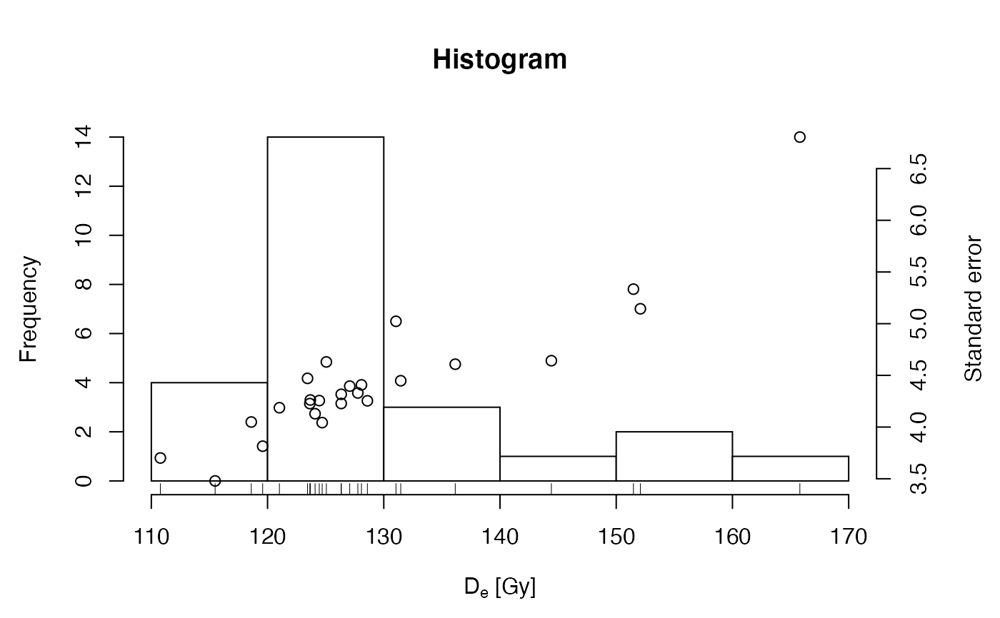
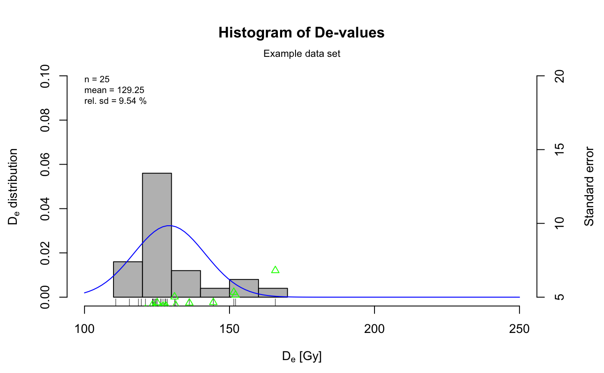

Function plots a predefined histogram with an accompanying error plot as suggested by Rex Galbraith at the UK LED in Oxford 2010.
plot_Histogram( data, na.rm = TRUE, mtext, cex.global, se, rug, normal_curve, summary, summary.pos, colour, interactive = FALSE, ... )
| data | data.frame or RLum.Results object (required):
for |
|---|---|
| na.rm | logical (with default):
excludes |
| mtext | |
| cex.global | numeric (with default): global scaling factor. |
| se | logical (optional):
plots standard error points over the histogram, default is |
| rug | logical (optional):
adds rugs to the histogram, default is |
| normal_curve | logical (with default): adds a normal curve to the histogram. Mean and sd are calculated from the input data. More see details section. |
| summary | character (optional): add statistic measures of centrality and dispersion to the plot. Can be one or more of several keywords. See details for available keywords. |
| summary.pos | numeric or character (with default):
optional position coordinates or keyword (e.g. |
| colour | numeric or character (with default):
optional vector of length 4 which specifies the colours of the following
plot items in exactly this order: histogram bars, rug lines, normal
distribution curve and standard error points
(e.g., |
| interactive | logical (with default): create an interactive histogram plot (requires the 'plotly' package) |
| ... | further arguments and graphical parameters passed to plot or
hist. If y-axis labels are provided, these must be specified as a vector
of length 2 since the plot features two axes
(e.g. |
If the normal curve is added, the y-axis in the histogram will show the probability density.
A statistic summary, i.e. a collection of statistic measures of centrality and dispersion (and further measures) can be added by specifying one or more of the following keywords:
"n" (number of samples),
"mean" (mean De value),
"mean.weighted" (error-weighted mean),
"median" (median of the De values),
"sdrel" (relative standard deviation in percent),
"sdrel.weighted" (error-weighted relative standard deviation in percent),
"sdabs" (absolute standard deviation),
"sdabs.weighted" (error-weighted absolute standard deviation),
"serel" (relative standard error),
"serel.weighted" (error-weighted relative standard error),
"seabs" (absolute standard error),
"seabs.weighted" (error-weighted absolute standard error),
"kurtosis" (kurtosis) and
"skewness" (skewness).
The input data is not restricted to a special type.
0.4.4
Michael Dietze, GFZ Potsdam (Germany)
Sebastian Kreutzer, IRAMAT-CRP2A, Universite Bordeaux Montaigne (France)
, RLum Developer Team
Dietze, M., Kreutzer, S., 2020. plot_Histogram(): Plot a histogram with separate error plot. Function version 0.4.4. In: Kreutzer, S., Burow, C., Dietze, M., Fuchs, M.C., Schmidt, C., Fischer, M., Friedrich, J., 2020. Luminescence: Comprehensive Luminescence Dating Data Analysis. R package version 0.9.7. https://CRAN.R-project.org/package=Luminescence
## load data data(ExampleData.DeValues, envir = environment()) ExampleData.DeValues <- Second2Gray(ExampleData.DeValues$BT998, dose.rate = c(0.0438,0.0019)) ## plot histogram the easiest way plot_Histogram(ExampleData.DeValues)## plot histogram with some more modifications plot_Histogram(ExampleData.DeValues, rug = TRUE, normal_curve = TRUE, cex.global = 0.9, pch = 2, colour = c("grey", "black", "blue", "green"), summary = c("n", "mean", "sdrel"), summary.pos = "topleft", main = "Histogram of De-values", mtext = "Example data set", ylab = c(expression(paste(D[e], " distribution")), "Standard error"), xlim = c(100, 250), ylim = c(0, 0.1, 5, 20))